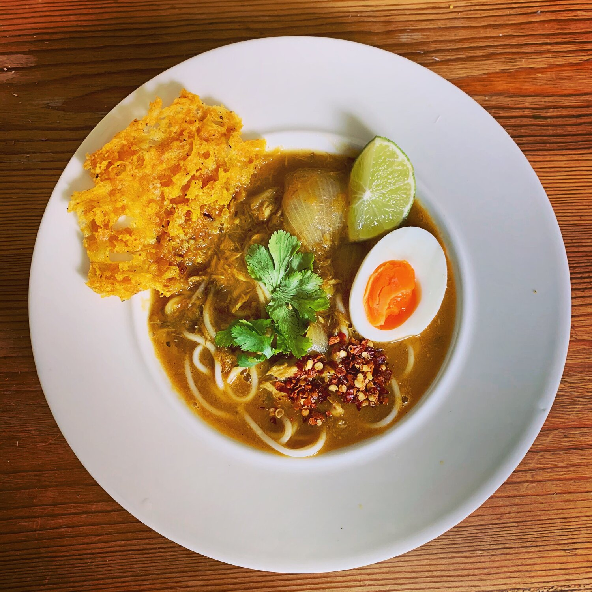

Mohinga

Description
Mohinga (Burmese: မုန့်ဟင်းခါး) is the national dish of Myanmar.
Mohinga is fish soup made with rice noodles, typically
served as a hearty breakfast. It features a rich broth
flavored with lemongrass, turmeric, and fish sauce, often
garnished with boiled eggs, cilantro, and crispy fritters.
Mohinga is readily available in most parts of the country,
sold by street hawkers and roadside stalls in larger cities.
Mohinga is traditionally eaten for breakfast, but today is
eaten at any time of day. Egg, onions or herbs can be added
into the dish.
Ingredients
- 2 - 3 lb whole catfish (skin on)
- 3 lemongrass, smashed and tied together with an outer leaf
- 6 garlic cloves
- 6 garlic cloves, minced
- 1 inch ginger
- 1 inch ginger, sliced
- 5 dried red chilies, re-hydrated with hot water
- Toasted chili flakes
- 2 whole turmeric roots or 2 tsp turmeric powder
- 6 tbsp. fish sauce
- Handful cilantro (best if roots are intact)
- Handful chopped cilantro
- 6 cups water
- 1/4 cup oil
- 2 lemongrass stalks, sliced
- 2 shallots, diced
- 2 tsp paprika
- 2 tbsp. white rice, toasted till golden over low heat
and grind to powder
- 10 pearl onions, peeled
- ½ cup tender core of banana stem or lotus roots,
sliced into 1/4 inch rings
- 1 tbsp. ground black and white pepper, each
- salt to taste
- Dried rice vermicelli , cooked per package instructions
- Toasted chili flakes
- 4 hard-boiled eggs, quartered or sliced
- Crispy Fritters
Steps
- First, make fish stock.
- In a large stockpot, add the whole fish, lemongrass, garlic,
chilies, cilantro, turmeric, fish sauce and water.
- Bring it to a boil, then reduce to medium-low heat and
simmer for 30 minutes till the fish easily flakes off.
- Take the fish out of the pot, peel the skin off and filet.
- Separate the large fillets and small, disintegrated flakes.
- Save the bones, head and skin as well as lemongrass, chilies
and turmeric roots.
- Strain the stock and set aside.
- Next, let's make collagen-rich fish broth.
- Put the fish bones, head and skin along with the herbs saved
from fish stock to a pot and add 3 cups of water.
- Season with salt.
- Simmer the soup over medium heat, for an hour till the broth
becomes creamy and white.
- Strain the broth and set it aside.
- Now, move onto soup base.
- Pound the shallots, garlic, ginger and lemongrass in a mortar
and pestle till it forms a paste.
- Heat oil in a pan and sauté the paste for 10 minutes.
- Add paprika. Stir in the small, disintegrated flakes,
free from the bones.
- Season with fish sauce and cook for about 10 minutes till
all residual liquid dry up.
- Finally, let's make mohinga.
- In a stockpot, bring the strained stock and broth to a
boil.
- Add the soup base.
- Make a slurry with the toasted rice powder and 4 tbsp of
cold water and stir into the soup.
- Add and cook the pearl onions and banana stem or lotus
roots till tender.
- Stir in the large fish fillets.
- Add ground black and white pepper.
- Season to taste and turn the heat off.
- Now, let's assemble it.
- In each bowl, ladle a cup of soup with fish flakes, pearl
onions and banana stem or lotus roots over a bundle of
rice vermicelli.
- Customize your bowl to your taste with all the garnishes
and toppings, lime, cilantro, boiled eggs, crispy fritters
and chili flakes.